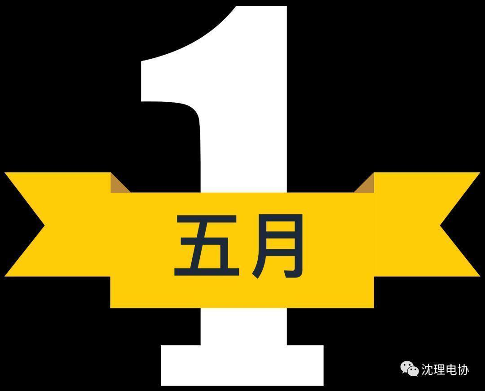
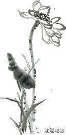
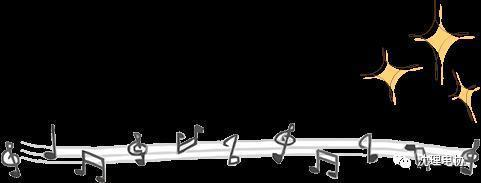

五一劳动节，你劳动了吗
五一劳动节，你劳动了吗

从忙碌的日常中，迎来了五一小长假，有的人拉着行李箱回家，有的人趁这悠闲来一场说走就走的旅行，有的人聚来好久不见的三两好友……可是，在欢笑声中淡却了的是五一节，到底是一个，什么样的节日？


五一国际劳动节源于1886年的美国芝加哥的工人大罢工。早在1866年，第一国际日内瓦会议就提出八小时工作制的口号。随后在1886年5月1日，以美国芝加哥为中心，在美国举行了约35万人参加的大规模罢工和示威游行，示威者要求改善劳动条件，实行八小时工作制。为纪念这次伟大的工人运动及抗议随后的宣判，在世界范围内举行了工人的抗议活动。这些活动成为了“国际五一劳动节”的前身。
为纪念这次工人运动，1889年7月，在恩格斯组织召开的第二国际成立大会上宣布将每年的五月一日定为国际劳动节。1890年5月1日，欧美各国的工人阶级率先走上街头，举行盛大的示威游行与集会，争取合法权益。从此，每逢这一天世界各国的劳动人民都要集会、游行，以示庆祝。

have a good time
2017.11.15
清晨推开窗享受五月的第一抹阳光时，你耳边是否想起那一句朗朗上口的“田家少闲月，五月人倍忙”。不由得在这忙春中问候一句：你忙起来了麽？

五月，是春蚕破茧而出，是燕子往北飞，是欣欣向荣的季节。别让五一度在床上，度在清闲中。让这个节日回到它本来的意义，让劳动成为一种习惯。背着你的包，来一场旅行，也可以带着一本书，饮一杯悠悠清茶。渐渐发现，忙碌也可以是一种享受，它会让生活变得更加充实。

忙碌的日子，会让我们无心闲暇烦恼，时间过得很快，眨眼间，一天就快结束了。繁忙的日子让人充实，繁忙的日子让人无暇顾及那些烦心的事情，生活本该过得好此，累也无所谓。

劳动是一曲永垂不朽的赞歌
你好，五月


伟 大 的 劳 动 者 们，五 一 节 快 乐 ！
关注我们


——编辑：符阳懿